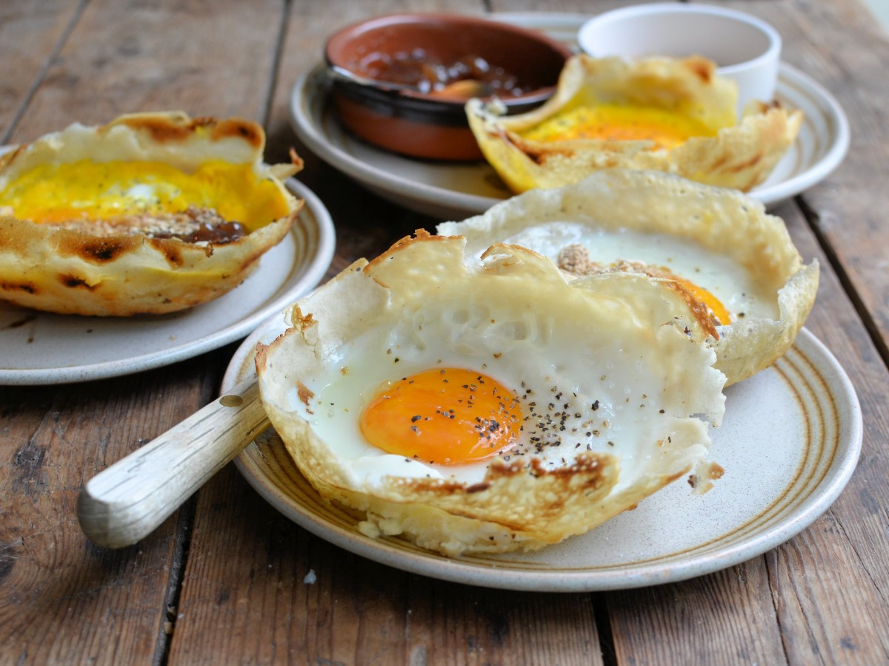
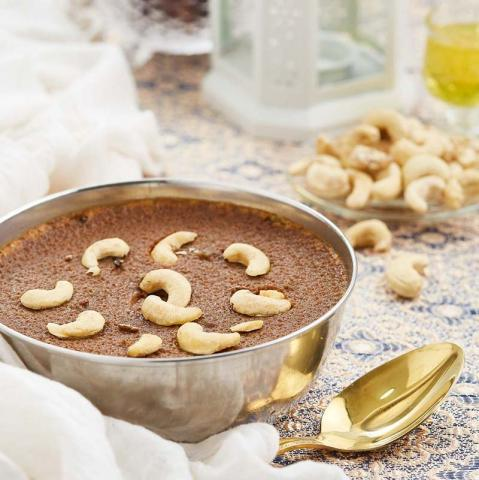

Egg hoppers are a traditional Sri Lankan dish made from fermented rice
flour batter cooked in a bowl-shaped pan. An egg is cracked into the
center of the batter, creating a thin, crispy pancake with a soft
center. These hoppers are often served with various accompaniments like
sambal (spicy relish) or curry, making them a popular and
flavorful meal or snack.

Watalappan is a delectable Sri Lankan dessert, known for its creamy
texture and rich, caramel-like taste. It's infused with aromatic spices,
offering a delightful balance of flavors in every spoonful.

Wood apple juice is made from the pulp of the wood apple fruit, also
known as bael fruit. It's a popular drink in some parts of Asia, revered
for its refreshing taste and health benefits. It has a unique flavor
that's sweet, tangy, and often described as a blend of mango, citrus,
and tamarind. Rich in vitamins and minerals, it's known for aiding
digestion and providing a good dose of nutrients.

Kokis is a Sri Lankan deep-fried snack made from a batter of rice flour
and coconut milk. It's crispy and lacy in texture, often prepared during
festive occasions like New Year celebrations. The batter is poured into
hot oil using a special mold to create its distinctive shape before
being fried to a golden brown.